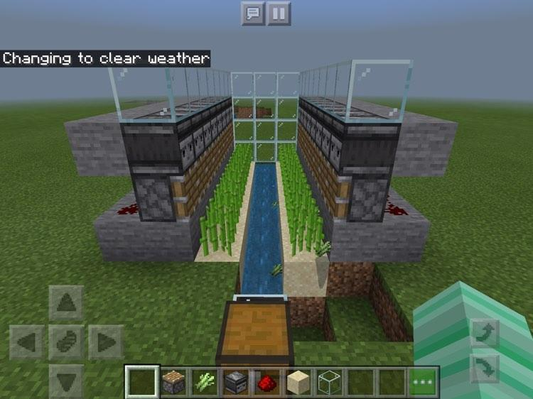
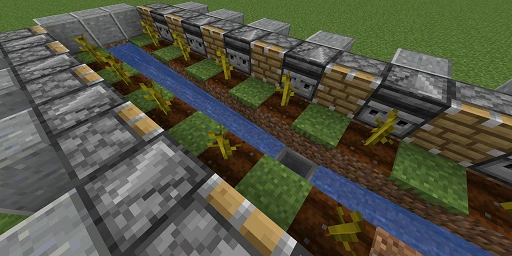
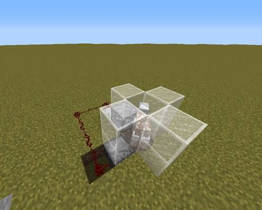

Essential Minecraft Auto Farms: 3 Beginner Projects
BeginnerAbout 5 minVersion-independent

Manual farming takes valuable time away from exploring, building, and fighting bosses. Redstone mechanics can automate the harvesting of useful resources. These three beginner projects can help you collect materials more efficiently.
Automated sugarcane and bamboo farm
Sugarcane is required for paper, books, and rockets, while bamboo serves as an excellent fuel source and building material. Because both plants grow vertically without destroying the base block, they are the easiest crops to automate.

Materials
- Sugarcane or bamboo stalks
- Dirt or sand block
- Water bucket (for sugarcane only)
- Piston
- Observer
- Redstone dust
- Hopper
- Chest
It depends on how much material you have; you can always enlarge your farm.
Basic steps
- Place the base: Dig a one-block hole, fill it with water, and place a dirt block next to it. Plant your sugarcane on the dirt.
- Set up the piston: Place a solid block behind the sugarcane, then place a regular piston on top of it facing the crop. The piston must sit exactly two blocks above the ground to avoid breaking the root.
- Mount the observer: Stand behind the piston and place an observer directly on top of it. The observer's face must look out over the sugarcane.
- Wire the redstone: Place a solid block directly behind the piston, then place one piece of redstone dust on top of that block.
- Add collection: Dig out the block in front of the sugarcane, place a chest, and connect a hopper to the back of the chest facing into it.
How it works
When the sugarcane grows three blocks high, it enters the observer's line of sight. The observer detects the block update and sends a signal downward through the redstone dust. This triggers the piston, which fires forward to break the middle sugarcane block. The top two blocks break and drop as items, while the bottom block remains intact to grow again. The dropped items fall into the water or directly onto the hopper to be stored in the chest.
Compact melon and pumpkin farm
Melons and pumpkins are essential for food, trading, and crafting. Because they grow horizontally, they require a slightly different approach to automation.

Materials
- Melon or pumpkin seeds
- Dirt blocks (one hoed into farmland)
- Water source
- Piston
- Observer
- Redstone dust
- Hopper
- Chest
It depends on how much material you have; you can always enlarge your farm.
Basic steps
- Prepare the soil: Till one dirt block with a hoe and hydrate it with adjacent water. Leave a regular dirt block directly next to it where the fruit will sprout.
- Position the piston: Place a regular piston facing downward or horizontally directly over the empty dirt block where the fruit will grow.
- Position the observer: Place an observer looking directly down at the tilled farmland block where the stem is planted.
- Connect the circuit: Run redstone dust from the back of the observer to the top of the piston block.
- Install collection: Place a hopper minecart underneath the dirt block where the fruit grows, or place a standard hopper directly next to it to catch the drops when the piston breaks the fruit.
How it works
When the melon or pumpkin grows, it updates the block state of the adjacent farmland. The observer detects this change and sends a redstone signal to the piston. The piston extends, breaking the melon or pumpkin and allowing it to drop as an item.
Automatic wool farm
Wool is necessary for beds, banners, and structural decoration. This farm eliminates the need to manually hunt or shear sheep by using a dispenser mechanism triggered by the sheep's eating habits.

Materials
- Sheep
- Grass blocks (must surround the farm to regrow grass)
- Dispenser
- Shears (placed inside the dispenser)
- Observer
- Redstone dust
- Hopper
- Chest
- Minecart with hopper
- Rails
It depends on how much material you have; you can always enlarge your farm.
Basic steps
- Build the chamber: Place a grass block on the ground and surround it with a two-block-high wall of glass to trap a sheep inside.
- Set the observer: Place an observer facing into the grass block, with its red output dot facing away from the sheep.
- Mount the dispenser: Place a dispenser facing inside the glass chamber toward the sheep. Fill it with shears.
- Wire the circuit: Place a solid block behind the observer and put a single piece of redstone dust on top of it.
- Build the underground collection: Dig beneath the grass block, place a chest and hopper, then place a rail and hopper minecart above the hopper. Seal the hole.
How it works
When a naked sheep grows its wool back, it eats the grass block beneath its feet and turns it into dirt. The observer detects the change and activates the redstone wire, which powers the dispenser and causes it to use the shears inside. Because standard hoppers cannot pull items through a solid dirt block, the hopper minecart sits underneath to pull the wool through the ground and deposit it into the storage chest. Nearby grass spreads back to the center block, resetting the cycle.